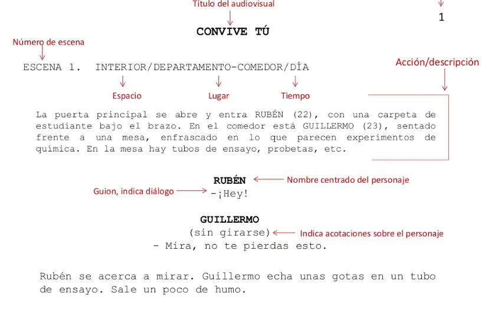

Guion Literario
El guion literario es la primera versión completa de un guion. Contiene:
Descripción detallada de las escenas
Diálogos completos de los personajes
Acciones principales de los personajes
Breves descripciones del entorno y la atmósfera
Su función principal es contar la historia de manera clara y atractiva, centrándose en el contenido narrativo más que en los aspectos técnicos de la producción.
